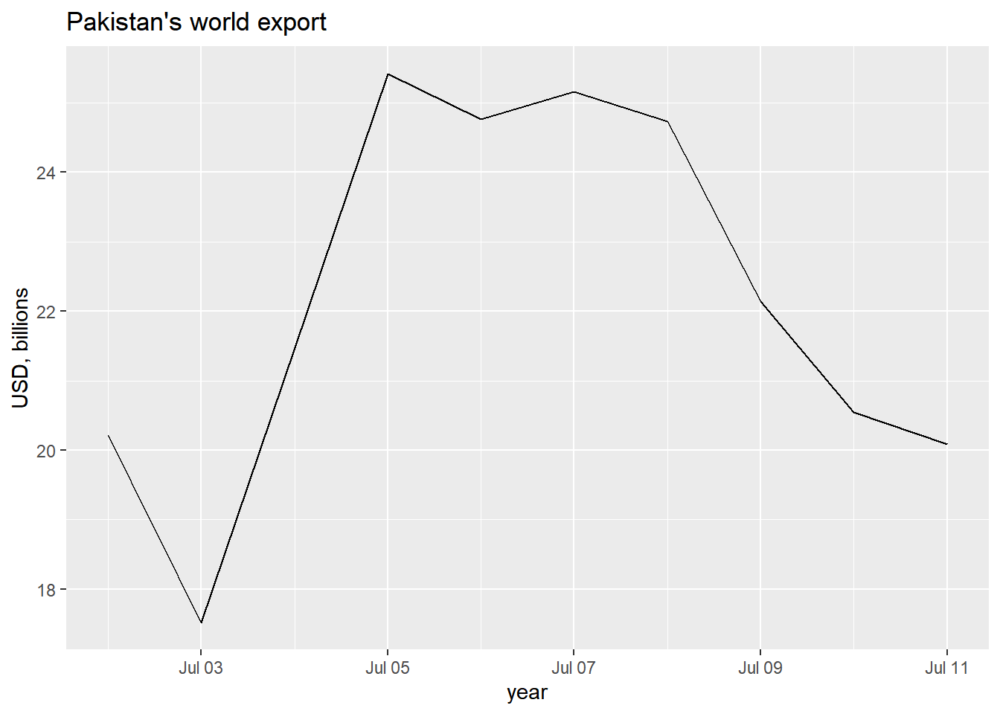
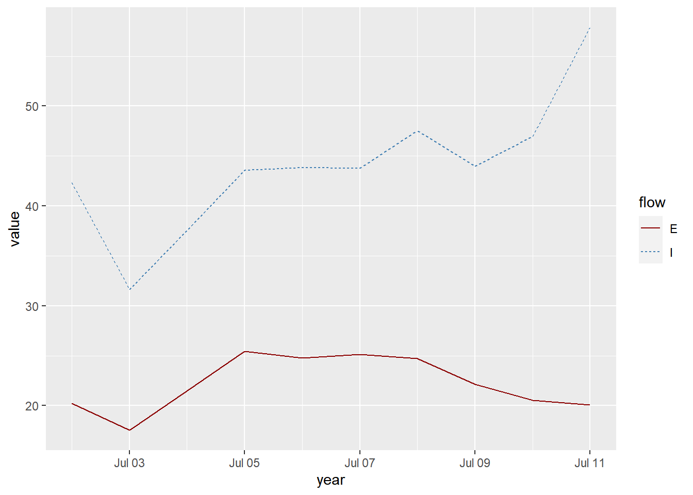
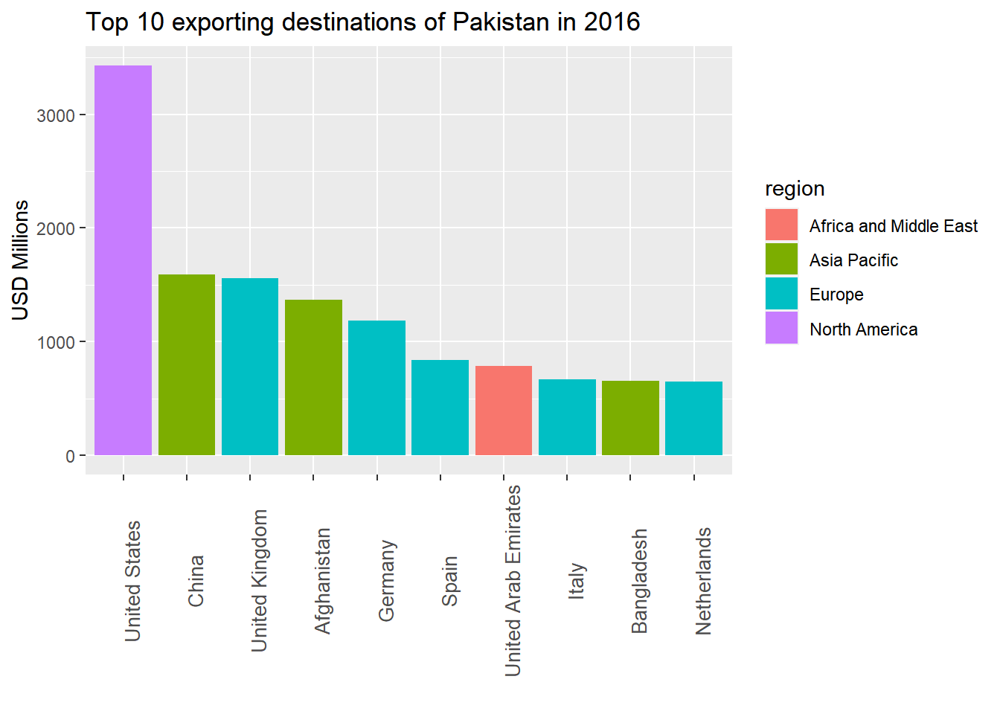
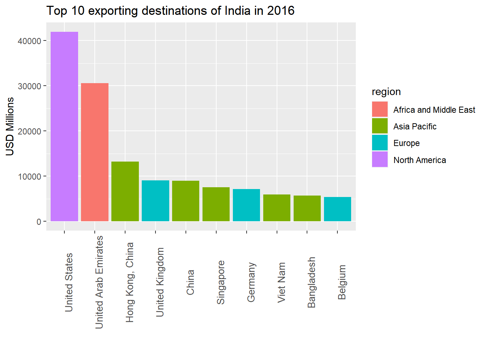
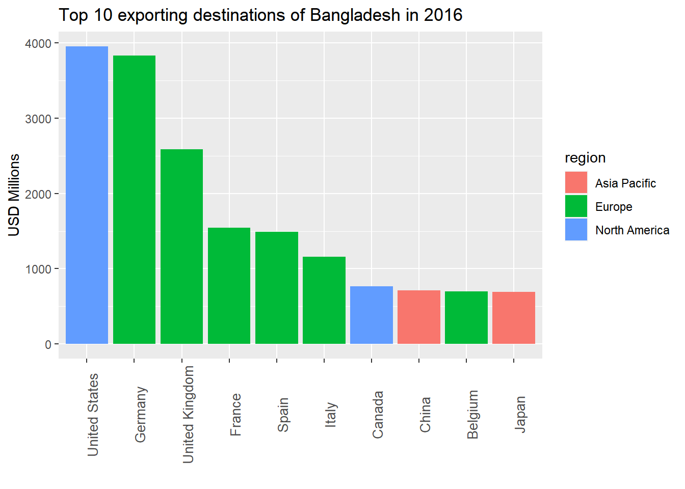
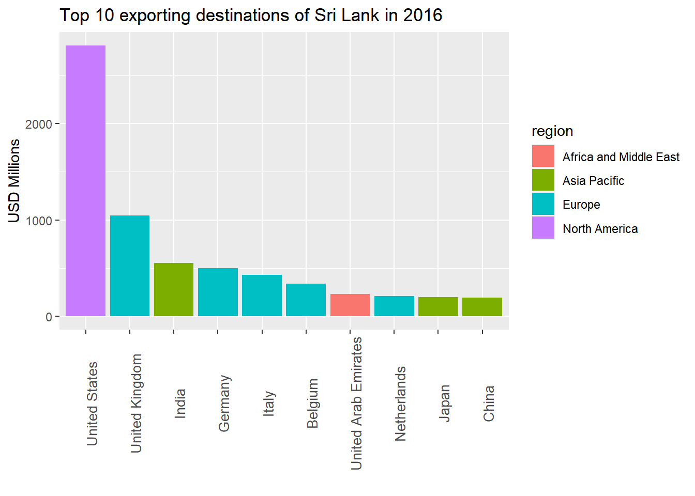
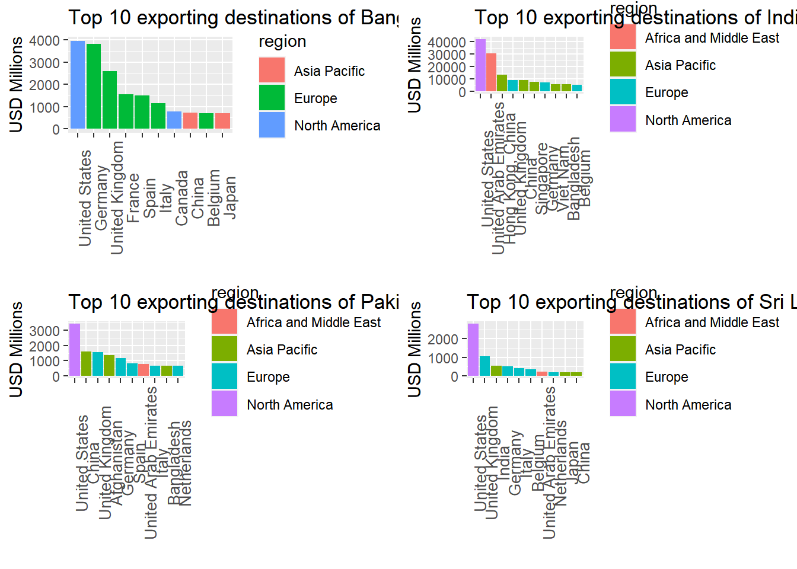

library(tidyverse)
load("trade_data.RData")Using tidyverse for trade analysis
School of Economics, Quaid-i-Azam University, Islamabad
Trade Data Analysis
This material is mainly based on UN ESCAPE online training on R for trade analysis. In this post, tidyverse is used instead of base-R (used in the original material) due to convenience and reading codes like english language. Moreover,ggplot2 provides awesome viusalization tools.
Loading data
Data are provided on https://r.tiid.org/ to be downloaded in csv file and one can read this data directly in R. I have save this data in R as RData and have loaded as follows. For more details on how to read various data formats in R, one can browse on how to import data. An easy way is File->Import Data Set -> then choose relevant file. In case of error, upload relevant packages.
To get idea about the nature of this data, one may get glimpse ,names or usehead etc.
names(trade_data)[1] "reporter" "flow" "partner" "year" "value" trade_data$value <- as.numeric(as.character(trade_data$value)) # trade value as numericWarning: NAs introduced by coercion# drop missing values
trade_data <- trade_data[!is.na(trade_data$value),]
trade_data# A tibble: 691,923 × 5
reporter flow partner year value
<dbl> <chr> <dbl> <dbl> <dbl>
1 213 I 186 2008 156130202
2 213 E 174 2008 117661208
3 213 E 172 2008 31986252
4 213 E 134 2008 1507966544
5 213 I 181 2008 2407260
6 213 I 182 2008 80414681
7 213 I 676 2008 991884
8 213 E 258 2008 107246580
9 614 I 110 2008 15302709034
10 213 E 648 2008 2660760
# … with 691,913 more rows
# ℹ Use `print(n = ...)` to see more rowsWe notice that there are 5 main variables, namely: reporter indicating destination country, flow consists of import and export , year for which trade data are included in this file and value is USD.`
We can now check the value in billion by dividing the previous function by a billion. Notice after the comma we specify the value column. Other than very large exporting/importing countries, one may convert value in millions of USD instead of taking it in billions of USD if required.
trade_data %>% distinct(year) # distinct number of years for which this trade data are available# A tibble: 10 × 1
year
<dbl>
1 2008
2 2009
3 2010
4 2011
5 2012
6 2013
7 2014
8 2015
9 2016
10 2017trade_data<-trade_data %>% mutate(value=value/1000000000)
options(scipen = 999) ## To avoid scientific numbers (like appearing in exponents)Pakistan
Now we analyze data for Pakistan for year 2016 and learn R for data exploration in this post.
trade_data %>% filter(flow=="E"&reporter==564&year==2016&partner==1) %>% select(value)# A tibble: 1 × 1
value
<dbl>
1 20.5So total export by Pakistan to the world (world coder in partner category is 1) is USD 20.8 billion. Now if we calculate Pakistan’s export with all countries, it is 86.3562426 USD Billion . This is greater than we calculated earlier with world. This is because there are many categories in partner category which include countries as well as different regions. So need some data wrangling before one can match both the figures. One has to exclude all those partner codes which are not equal to 1 and isCountry==1.
Export plot for all the years
library(lubridate)
Attaching package: 'lubridate'The following objects are masked from 'package:base':
date, intersect, setdiff, unionPK_X<-trade_data %>% filter(flow=="E"&reporter==564&partner==1)
PK_X$year<-as_date(PK_X$year)
ggplot(PK_X)+aes(x=year,y=value)+geom_line()+labs(y="USD, billions", title = "Pakistan's world export")
Import and Export Together
PK_XM<-trade_data %>% filter(reporter==564&partner==1)
PK_XM$year<-as_date(PK_XM$year)
ggplot(PK_XM, aes(x = year, y = value)) +
geom_line(aes(color = flow, linetype=flow)) +
scale_color_manual(values = c("darkred", "steelblue"))
Top 10 exporting destination for Pakistan
Let’s now show in a plot the top 10 countries Pakistan exported to in 2016.
We start by creating a table with Pakistanis exports in 2016 to individual countries:
PK_X_countries <- trade_data %>% filter(flow=="E"&reporter==564&year==2016&partner==1)But to get top trade partners we have to extract names of the countries for which following file is downloaded from the IMF. Partner codes are available but country names are not given which one has to download from the IMF website.
Country code
To select countries, `isCountry” or code has to be set 1 so other categories like advanced countries and countries not specified are excluded
imf_codes <- read_csv("imf_codes.csv")Rows: 245 Columns: 10
── Column specification ────────────────────────────────────────────────────────
Delimiter: ","
chr (5): iso2, country, region, income_level, AP_region
dbl (5): code, isCountry, LLDC, LDC, SIDS
ℹ Use `spec()` to retrieve the full column specification for this data.
ℹ Specify the column types or set `show_col_types = FALSE` to quiet this message.codes<-imf_codes %>% select(code,country,isCountry, region)
cntry_w <- codes %>% filter(isCountry==1|code==1) %>% select(code)
cntry_w# A tibble: 216 × 1
code
<dbl>
1 512
2 799
3 914
4 612
5 1
6 859
7 614
8 312
9 311
10 213
# … with 206 more rows
# ℹ Use `print(n = ...)` to see more rowsPK_X_2016<-trade_data %>% filter(flow=="E"&reporter==564&year==2016&partner!=1&partner %in% cntry_w)
PK_X_2016
PK_X_2016<-trade_data[trade_data$flow=="E"& #select only exports
trade_data$reporter==564& #from china
trade_data$year==2016& #in 2016
trade_data$partner!=1& #where country is not world (code for world is 1)
trade_data$partner %in% cntry_w, #which is in the list of codes that we filtered earlier
"value" #variable we're interested in
]
sum(PK_X_2016)/1000000000Merge country codes and trade_data
Lets do the same exercise for Pakistan before proceeding further.
PK_X_countries <-trade_data %>% filter(flow=="E"&reporter==564&year==2016&partner!=1)
PKX_merged<-left_join(PK_X_countries,codes,by=c("partner"="code"))
PKX_merged<-PKX_merged %>% select(country, value, isCountry,region)
PKX_merged# A tibble: 207 × 4
country value isCountry region
<chr> <dbl> <dbl> <chr>
1 Somalia 0.0329 1 Africa and Middle East
2 Albania 0.00430 1 Europe
3 Syrian Arab Republic 0.0158 1 Africa and Middle East
4 Morocco 0.0175 1 Africa and Middle East
5 Angola 0.0171 1 Africa and Middle East
6 Netherlands 0.651 1 Europe
7 Niger 0.0000769 1 Africa and Middle East
8 Paraguay 0.00672 1 Latin America and Carribean
9 Gabon 0.00155 1 Africa and Middle East
10 Peru 0.0261 1 Latin America and Carribean
# … with 197 more rows
# ℹ Use `print(n = ...)` to see more rows# Only keep countries
PKX_merged<-PKX_merged %>% filter(isCountry==1)Top 10 exporting destinations in case of Pakistan in 2016
Sort export value by descending order using arrange() and then select top 10 exporting destinations.
PKX_merged_top10<-PKX_merged %>% arrange(desc(value))
PKX_merged_top10<-head(PKX_merged_top10,10)
PAK<-ggplot(PKX_merged_top10, aes(x = reorder(country,-value), y = value*1000, fill=region))+geom_bar(stat='identity')+theme(axis.text.x = element_text(angle = 90, size = 10))+labs(x="",y="USD Millions",title="Top 10 exporting destinations of Pakistan in 2016")
PAK
India
PK_X_2016<-trade_data %>% filter(flow=="E"&reporter==564&year==2016&partner!=1&partner %in% cntry_w)
PK_X_2016
PK_X_2016<-trade_data[trade_data$flow=="E"& #select only exports
trade_data$reporter==564& #from china
trade_data$year==2016& #in 2016
trade_data$partner!=1& #where country is not world (code for world is 1)
trade_data$partner %in% cntry_w, #which is in the list of codes that we filtered earlier
"value" #variable we're interested in
]
sum(PK_X_2016)/1000000000India

##Bangladesh

Sri Lank

South Asia
Total export of Bangladesh, India, Pakistan and Sril Lanka in billion of USD is 30.1310391, 261.862, 20.5478447 and 10.0459592 respectively.
library(gridExtra)
Attaching package: 'gridExtra'The following object is masked from 'package:dplyr':
combinegrid.arrange(BD,IND,PAK,SRL, ncol=2)